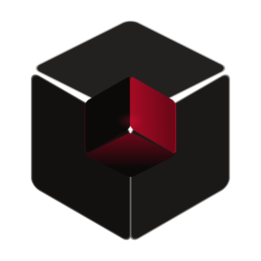

Upscaly runs real AI upscaling models directly on your own GPU. No account, no cloud, no queue — and not one byte of what you upscale ever leaves the machine it's on.
7-day free trial · v1.1.0 · Windows 10/11 x64
Drag to compare
Choose an image — or a video, on desktop. Your originals are never modified; every result is written as a new file.
Eight models tuned for different work — photography, portraits, line art, illustration — each downloaded only if you actually use it.
Inference runs on your own GPU through Vulkan compute. No upload, no server queue, no per-image cost.
The full desktop app for Windows. Handles both images and video, batches entire folders, and gives you direct control over models, scale and tiling.
7-day free trial · one-time purchase · no subscription
The same engine, rebuilt for a phone. Pick a photo, drag to compare the result, pinch to inspect real detail — all of it running on the phone's own GPU.
Free · no ads · no in-app purchases
Plenty of upscalers promise privacy in their terms. Upscaly doesn't need to — the work physically happens on your hardware, so there's no server that could keep your images even if someone wanted it to.
No sign-up, no login, no email. Install it and it works.
No telemetry or crash-reporting SDK anywhere in either app.
The only downloads are the models you choose — plus FFmpeg for video on Windows.
Results save as new files. Your source images stay exactly as they were.

Free for 7 days. Offline, and nothing you feed it goes anywhere.
Start your free trial